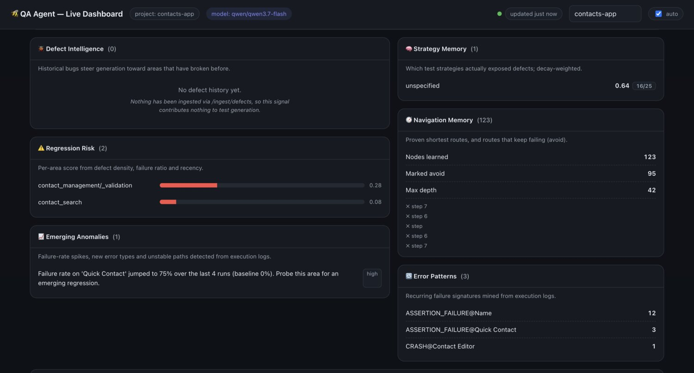
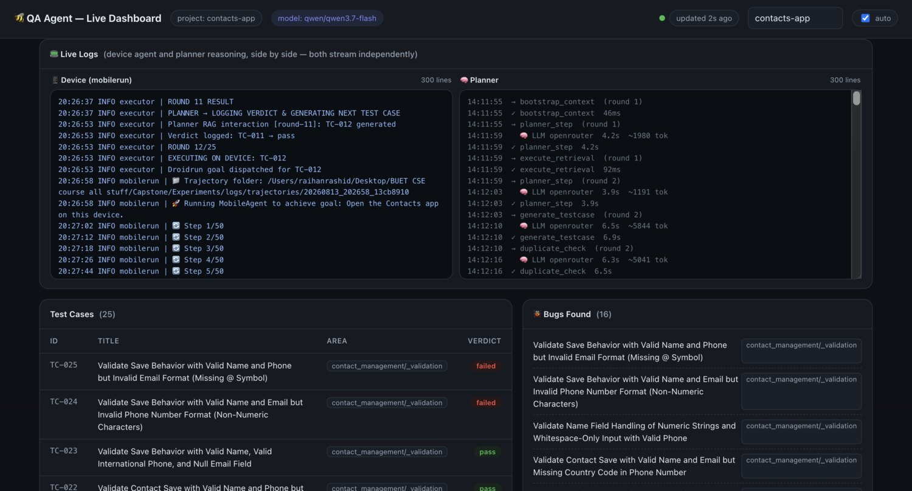
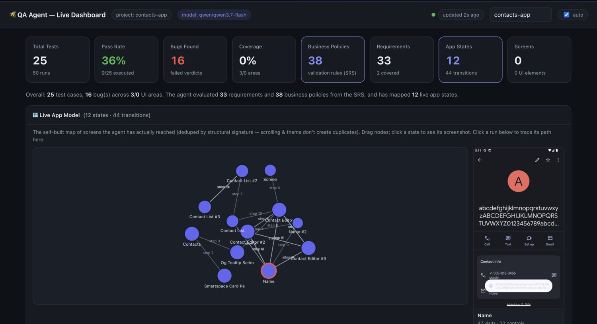
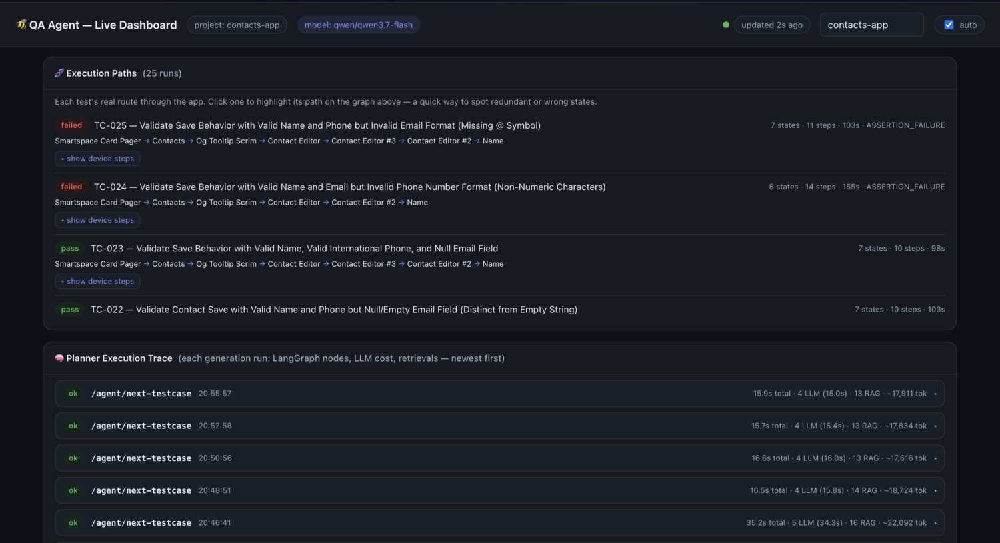
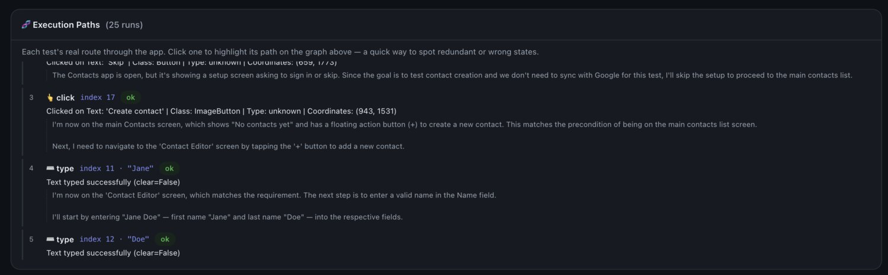

How each roadmap requirement was fulfilled, the architecture as built, measured results with their caveats, and an honest account of what had to be fixed to make the numbers mean anything.
All eight roadmap requirements have working implementations, verifiable on a live dashboard. The agent tests any Android application with no documentation at all, and uses an SRS, a UI guide or defect history when they exist. The decisive work this period was not adding capability — it was making the system's own reporting trustworthy.
The single most important number is autonomy: 100%. In the final 25-test campaign, not one execution was lost to a failure of our own agent — every outcome was either the application behaving correctly or the application doing something the specification did not predict. Two campaigns earlier that figure was effectively zero. Until it was high, no defect-discovery number could mean anything, because "the test failed" and "the agent got lost" were indistinguishable.
The run produced 16 candidate defects (64%). That is not a defect-discovery rate — each is an assertion that did not hold and needs human confirmation, and some will prove to be tests whose expectations were wrong. Precision and recall cannot be computed at all until we run against seeded defects with known ground truth, which is the first thing we are asking you for (§9).
For each requirement: what was built, and what evidence exists that it works. All graph writes, endpoints and prompt blocks named below are live in the running system; the screenshots on the following pages show them populated by a real campaign.
Defect nodes with severity, area and root-cause category;
POST /ingest/defects, GET /defects/summary,
/defects/prone-areas, /defects/context. Defect density weights the
retrieval score, and a ## Defect History Context block (2,000-char budget) is
injected into generation.NavTreeNode with shortest-path merge on re-observation and an
avoid flag set when a node's success/visit ratio falls below 0.3.
/navtree/record-path, /retrieve-path, /failed-paths;
two prompt blocks — learned route, and known failed routes.ExecutionLog
(full action/screen trajectory, error type, environment), ErrorPattern (mined
recurring signatures), StrategyMemory (effectiveness, decay-weighted with a
90-day half-life), CoverageHeatmap (snapshotted for trend analysis) and
Session (continuity across calls).ASSERTION_FAILURE@Name ×12,
ASSERTION_FAILURE@Quick Contact ×3, CRASH@Contact Editor ×1;
strategy score 0.64 over 16/25 applications.Profile / Platform / Application nodes
with TARGETS_* and TESTS_APPLICATION edges; optional dimension
parameters on every ingest and retrieval route, defaulting to today's behaviour;
MAY_APPLY_TO {transfer_confidence} for cross-dimension transfer; a
## Target Environment prompt block.## Previous Failure Context block so the second attempt is informed.FeatureArea.regression_risk_score computed from defect density,
historical failure ratio, recency and navigation instability; exposed at
GET /risk/scores and injected as ## Regression Risk Assessment so
high-risk areas attract more generation attention.contact_management/_validation at 0.28, contact_search at 0.08 —
matching where failures actually clustered.AnomalyAlert nodes from an engine over execution history:
failure-rate spikes against a rolling baseline, newly-appearing error types, duration
regressions and unstable navigation paths. Alerts are surfaced to generation so the next test
investigates them.
summary_block / retrieve / prompt_block, and the
planner iterates registered sources instead of a hardcoded list. Correctness signals form a
cascade: SRS validation rules → defect-history patterns → UI-guide affordances → generic
exploratory heuristics, so there is always a bug oracle even with zero documents. Each source
can be switched off from a single settings file.The planner decides what to test; the executor drives the device; neither talks to the other. Everything they share passes through the knowledge graph, and every LLM call is stateless — "learning" means the graph grew, never that a model remembered.
/execution/log updates the execution record,
navigation memory and strategy scores atomically. The executor knows about none of them, so the
device driver can be replaced without the planner changing.This separation is what makes the roadmap's "every cycle makes it smarter" requirement structural rather than aspirational: there is exactly one place where experience enters the system, so the learning layers cannot drift apart from one another.

With no design guide, the only reliable knowledge is what the application shows. The agent builds its own map by observing the running device — and the hard part is deciding whether a screen it just saw is one it has already mapped.
Each observation is reduced to a structural signature: package, activity,
whether a modal surface is open, and the set of controls keyed by
(resource_id, class, content-description, clickable). Free text, list contents, row
counts and scroll position are discarded. Two properties follow for free — scrolling a contact list
past different people is the same state, and a light-to-dark theme switch is the
same state, because the view hierarchy never changed. Identity is structural rather than
visual precisely because a vision model would call a dark screen a new screen.

The graph holds 23 node types. From the specification: Requirement,
ValidationRule, Entity, Chunk, SRSVersion. From
the device: UIState joined by TRANSITIONS_TO. From experience:
ExecutionLog, NavTreeNode, ErrorPattern,
StrategyMemory, AnomalyAlert, CoverageHeatmap,
Session. Test-to-requirement traceability runs through explicit COVERS
edges, which is what lets requirement coverage be a first-class metric rather than a proxy such as
activity coverage. Current contents: 33 requirements, 38 validation rules, 48 entities, 25 test
cases, 12 UI states, 123 navigation nodes.
Every generation call rebuilds its prompt from the graph, from scratch. Nothing is remembered between calls, so the prompt is the agent's entire working memory — which makes what goes into it, and what gets dropped from it, an architectural decision rather than a detail.
Cost is derived from the live billing ledger rather than a model price card — spend in a billing window divided by executions in that same window, so every figure includes retrieval, generation, dedup and device calls:
Running a test is close to free. Reading the specification is not. That is the whole finding, and it is the opposite of what we assumed. The three models in the system differ in price by two orders of magnitude:
| Model | Role | $/M in | $/M out | Calls per campaign |
|---|---|---|---|---|
| qwen3.7-flash | planner loop | 0.030 | 0.130 | 108 |
| qwen3-vl-32b-instruct | device agent (vision) | 0.104 | 0.416 | ~250 |
| qwen3.8-max | SRS extraction | 2.000 | 6.000 | ~22 (once per document) |
The per-test figure is built from measured quantities, not price-card arithmetic: 10.1 device steps per test (232 stored observations across 23 runs), an accessibility tree averaging 4,686 bytes (~1,170 tokens) per step, a 1080×1920 screenshot, and the planner's 384k tokens logged across 108 calls. It is corroborated independently by the ingestion-free portion of our total spend, which lands at the same figure.
The asymmetry is by construction. extract() runs a multi-pass extraction
once per sample — three samples, kept because this artefact underpins every
later decision — and each pass splits the specification into ~1,800-character sections and issues
one uncapped call per section, plus a synthesis and a self-critique call. A final
judge call selects the best candidate. On an 8k-character specification that is roughly
22 calls on the most expensive model in the system, with no output ceiling; the
ingest log ends in a 1,800-second timeout, consistent with that volume.
The quality argument for paying it once is sound. What is missing is metering: nothing caps the output length, nothing reduces the sample count once the extraction has stabilised, and nothing prevents an unchanged document from being read again from scratch.
Two costs that behave completely differently. Ingestion is one-time per document at ~$1.80 and is paid again only when the specification changes — or, as happened repeatedly during development, when we re-ingest to test a change to the ingestion itself. Testing is ~1¢ per test and scales linearly. A nightly regression suite of 500 tests is roughly $4, and 2,000 tests roughly $16, on top of an ingestion that does not repeat.
That also relocates the optimisation target. Within a test execution the device agent is ~92% of the cost and the planner ~8%, so navigation memory cutting median steps from 50 to 9 was a real saving. But against total project spend, extraction is the dominant line item, and the levers there are capping its output length, reducing the sample count from three, or caching extraction per document hash so an unchanged specification is never re-read. None of these are implemented; all are straightforward.
Six campaigns, 98 device executions, all preserved on disk as full step-by-step trajectories. Each campaign changed one thing about the agent and was measured against the same application and the same specification.
| Campaign | Tests | Wall | What changed | Outcome |
|---|---|---|---|---|
| 24 Jul · 22:25 | 6 | 67m | first end-to-end wiring | pre-instrumentation smoke run |
| 25 Jul · 01:42 | 4 | 14m | graph write-back | pre-instrumentation smoke run |
| 12 Aug · 22:42 | 25 | 107m | first full campaign with attribution | 0% pass — 82% of device steps unparseable |
| 13 Aug · 03:03 | 29 | 84m | non-reasoning vision model; livelock detector | 9% → 20% pass, autonomy 91% → 96% |
| 13 Aug · 19:02 | 9 | 16m | — | cancelled by us after spotting bad preconditions and unreadable logs |
| 13 Aug · 19:55 | 25 | 61m | precondition filter, containment matching, device reset, log reassembly | 36% pass · 100% autonomy · 0 silent fallbacks |
25 is a deliberate ceiling, not a technical limit — the agent will run indefinitely. Three reasons hold it there for now.
The budget pressure is re-ingestion, not test volume. A 25-test campaign costs about $0.20, so length is not what constrained us — we have spent $2.69 of an inherited $6.50 prepaid balance, and the great majority of that went on re-reading the specification each time we changed how ingestion works (~$1.80 a time), not on running tests. Nearly every improvement in the table above came from changing the agent between campaigns rather than from running a longer one, and each of those changes to the ingestion path cost far more than the campaign that followed it.
25 is what one engineer can review by hand. Until we have seeded defects, the only way to know whether a "candidate defect" is real — and whether the test was checking the right requirement in the first place — is to read every test, its route and its verdict. That is a couple of hours for 25 tests and infeasible for 200. Every campaign therefore exports a review sheet with blank rubric columns for exactly this purpose.
The prompt's dedup memory saturates near this scale. Executed-test titles are capped at 120 and prior findings at 25; past those, older entries drop out and the planner can regenerate a test it has already tried. Raising the caps is nearly free at current sizes, but we would rather raise them deliberately once we can measure the effect than discover the regression in a 200-test run.

A failed run is not a discovered defect. Every execution falls into one of eight categories, and only two are evidence about the application:
| Outcome category | Attributed to | Candidate defect? |
|---|---|---|
| ASSERTION_FAILURE, CRASH | The application | yes |
| NAVIGATION_FAILURE, ELEMENT_NOT_FOUND, TIMEOUT, NAVIGATION_LIVELOCK | Our agent | no — lowers autonomy |
| PRECONDITION_NOT_MET, PERMISSION_DENIED, STEP_LIMIT_EXCEEDED | The environment | no — excluded |
This taxonomy is why the numbers above can be read at all. It resolves the question that made the project hard to measure honestly: a task the agent could not complete may be a genuine defect, a limitation of the agent, or an impossible precondition — and those three must never be summed.

Each campaign also exports a machine-readable CSV — test id, title, verdict, error type, attribution, device steps, distinct states, duration, cited requirement ids and the full screen route — plus a review sheet with blank rubric columns. Before this, run data lived only in the graph and was destroyed by the next clean-slate wipe.
Most of this period's engineering went into defects in our own system that were invisible precisely because the system handled them gracefully. Every one was found by inspecting real output, not by reading code.
| Defect | How it stayed hidden | Consequence |
|---|---|---|
| 86% of the SRS discarded at ingestion | Chunking kept only lines matching a requirement-ID pattern and dropped every prose paragraph; the endpoint reported success. | Retrieval served headings without the requirements under them |
| A deleted document kept serving requirements | Ingestion appended rather than replaced, keyed by filename. 17 of 19 chunks came from a file removed weeks earlier. | The model cited requirements that no longer existed |
| State identity overwritten on merge | A near-match adopted the newcomer's signature, so a later identical observation no longer matched and forked. | Self-inflicted state explosion — 42 states where 12 were real |
| Requirement coverage read 0% for days | The one call that creates COVERS edges sat inside a bare except: pass. | Traceability, our main differentiator, appeared not to work |
| The device reset reset nothing | It cleared the app package, but contact data lives in a separate content provider. The command returned "Success". | 33 contacts accumulated; clean-state tests unsatisfiable |
| Reasoning tokens starved the answer | A 2,048-token output cap was consumed by a reasoning model's private scratchpad, truncating the JSON mid-object. | A stronger model produced fewer requirements than a weaker one |
Removing the error handling would be the wrong lesson — one malformed screen must not end a two-hour unattended run. Instead every fallback now records what capability was lost and at what severity, surfaced on the dashboard and in the end-of-run report. A run that "succeeded" while operating on worse data is visibly marked untrustworthy. The final campaign reported zero silent fallbacks — a statement that is only meaningful because the mechanism to detect them exists.
A model that reasons in-band breaks a strict output parser. The device model's
<think> output corrupted tool-call parsing, so 82% of steps did nothing — the
agent narrated intentions and never acted. This presents as "the agent is bad at the task", not as
a parsing error, which is why it survived a whole campaign. A non-reasoning vision model took parse
failures to zero and the median step count from 50 to 9.
Fixing a false positive invites a false negative. Livelock detection originally aborted any run that revisited a few screens, which killed the legitimate test "add ten contacts and observe the list" — structurally two screens alternating. Adding a content-progress signal fixed that and introduced the opposite error: an agent retyping the same field forever looks like progress because the text keeps changing. One run cycled 43 observations across 5 states for the full budget and was recorded as a crash. Still open.
Generality has to be enforced, not assumed. An early fix to the chunker still keyed on the sample SRS's numbering conventions — a system that works on documents shaped like ours, not a generic one. It was rewritten to know nothing about requirement conventions and to retain 100% of source text regardless of format.
What we adopt. Our structural signature is a re-derivation of STOAT (ESEC/FSE 2017), which treats only structurally different pages as distinct states. Threshold-based similarity over a state abstraction is standard — Judge (ACM TOSEM) treats abstraction as a first-class problem, and Jaccard with a tuned threshold appears in Android GUI testing at 0.75–0.82 against our 0.90. APE (ICSE 2019) refines its abstraction at runtime rather than fixing it in advance, which is where our cascade is heading. Attribution before measurement follows recent LLM GUI-agent evaluation work.
Where we differ. Three things, stated conservatively:
COVERS edges plus SRS drift detection make requirement coverage a first-class metric
for an exploratory agent — an intersection we have not found occupied.We re-validated the sources this design leans on. STOAT, APE, GPTDroid (ICSE 2024) and Judge are peer-reviewed at top-tier venues. Several recent GUI-agent papers we drew framing from are unrefereed arXiv preprints with very small benchmarks; we treat their methods as informative and their numbers as not yet a baseline, and do not cite them as evidence for our own claims.
Both remaining gaps in the roadmap are blocked on inputs we cannot produce ourselves. Neither is large, and each converts a capability we have already built from "implemented" into "demonstrated".
ETA-REQ-301 is fully built and completely dormant: no defect data has ever been ingested, so defect-density-weighted exploration has never actually influenced a test. An export from any application we can also run against — id, title, area or component, severity, status, and ideally the resolution or root cause — would activate it immediately. Format is flexible; the ingestion endpoint already normalises. Even a few hundred historical issues would let us show tests skewing toward defect-prone areas versus a no-defect baseline, which is the requirement's stated acceptance criterion.
This is the more important of the two. Every quality number in this report is bounded by the fact that we have no ground truth: we can say a test failed, and we can say the agent did not cause the failure, but we cannot say whether a real defect exists, and we cannot detect a defect the agent missed. Recall is currently unmeasurable in principle.
What would fix it is a build of a target application with 8–12 known defects deliberately introduced and a list of what they are and where — a relaxed validation rule, a broken duplicate check, a dropped required field, an incorrect boundary. With that we run three arms against a fixed budget: the full agent, the agent with its memory layers disabled, and a random-exploration baseline. That produces precision, recall and F1 against ground truth, and the ablation gives direct evidence for the roadmap's central claim that every execution cycle makes the agent smarter. The measurement infrastructure is already built and the campaigns are cheap — under $1 of model spend for all three arms, since the specification only needs ingesting once. We can also seed the defects ourselves if you can point us at a suitable application and confirm that is acceptable.
Smaller, but it distorts a headline metric. The sample SRS contains activation and SIM-region requirements that may not be reachable through the application interface at all. While they remain in the denominator they depress requirement coverage permanently regardless of how well the agent performs. A note on which requirement classes are considered in scope for UI testing would let us report that figure honestly.
| Issue | Consequence | Priority |
|---|---|---|
| Requirement coverage reads 2 of 33 | Traceability works mechanically, but few generated tests cite requirement ids, so our main differentiator is under-demonstrated | high |
| Livelock false negative | An agent repeating one action indefinitely is recorded as a crash, inflating the apparent defect count | high |
| Planner invents cross-screen premises | Tests occasionally target controls that do not exist on the screen named in the step, wasting executions | medium |
| Impoverished observations | Recorded UI events omit clickable, content-description and package, weakening state identity and screen labelling | medium |
| Extraction is non-deterministic | The same document yields different requirement counts between runs, breaking reproducibility of any experiment built on it | medium |
| Cross-application transfer unvalidated | ETA-REQ-304 is built but every campaign has run against one application | medium |